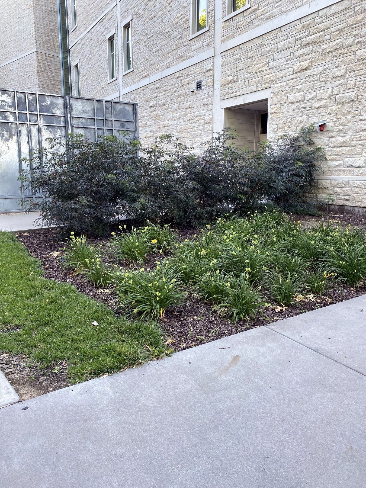

Lawn Mowing
Consistent mowing, trimming and crisp edging for residential and commercial properties.
Request service →
Serving the Flint Hills
Reliable, owner-operated property care for homes, businesses and commercial properties throughout Manhattan and surrounding communities.
Built on quality
From dependable weekly mowing to complete landscape improvements and commercial grounds maintenance, we show up prepared, communicate clearly and take pride in the finished result.
What we do
Consistent mowing, trimming and crisp edging for residential and commercial properties.
Request service →Mulch, decorative rock, edging, planting, sod, drainage and landscape improvements.
Explore landscaping →Spring and fall cleanup, leaf removal, brush clearing and property refreshes.
Request cleanup →Reliable grounds care for apartments, offices, retail, churches and managed properties.
Commercial services →Year-round planning for commercial lots, sidewalks and entrances when winter weather arrives.
Explore snow services →Also offering aeration, overseeding, fertilization, bush trimming, sod, hardscaping and drainage solutions.
Real transformations
Drag the sliders to compare recent property improvements. New 2026 projects will replace these preview images during final photo selection.


A refreshed landscape that makes the entire property feel maintained and intentional.


Detailed cleanup and finishing work designed to make a strong first impression.
Commercial grounds care
We help property managers and business owners protect curb appeal with consistent communication, reliable scheduling and a single point of contact.
Why KS Lawn Ranger
Your property is handled by a local, owner-operated company that values clear expectations and quality work.
Client feedback
Locally owned
KS Lawn Ranger is an owner-operated lawn care and landscaping company serving Manhattan, Alma, Wamego, St. George, Ogden and Junction City. This section will be completed with Kohlton's story and photo.
The layout is already built so the final content can be added without redesigning the page.
Service area
Start your project
The final estimate form will be added separately. For now, this button can connect to your current request process.